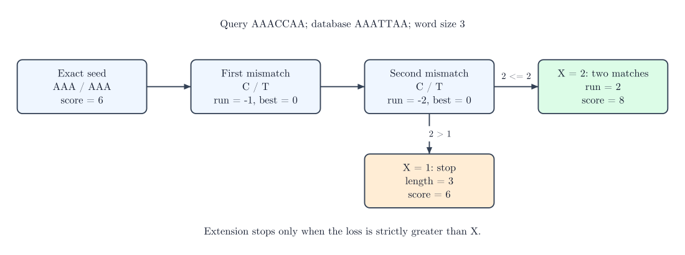
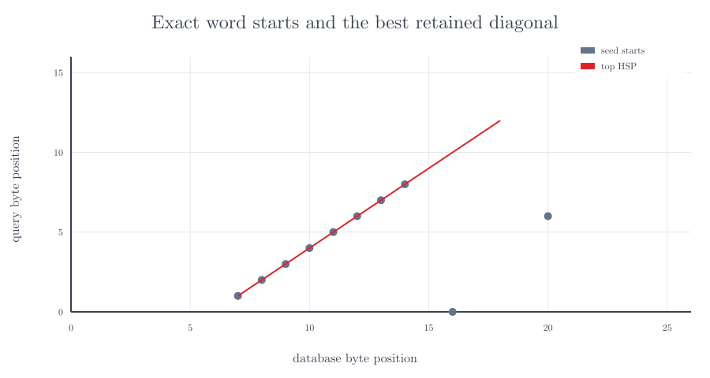
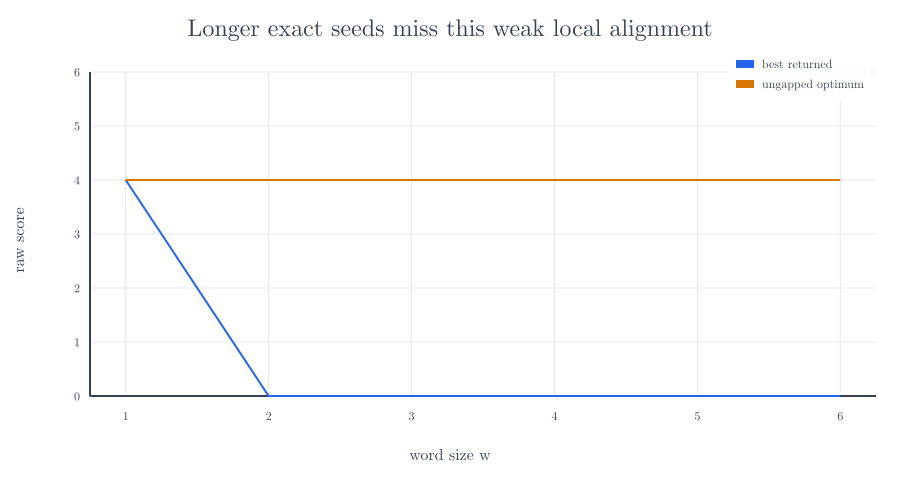

BLAST-Style Seed-and-Extend Alignment: What the Heuristic Retains
Abstract
Find locally similar pieces of a query and a database sequence without scoring every possible alignment. Exact shared words provide candidate locations, and ungapped extension scores their flanks until the running score loses too much ground. We inspect a seven-byte example, retain the original synthetic DNA alignment, and test both sensitivity and work. Datamunge implements a simplified BLAST-style heuristic: raw scores, exact byte words, no gaps, and one retained segment per diagonal. Its seed and extension inspection APIs share the actual search mechanics.
The method
An exact length-w word at query position i and database position j fixes the diagonal j-i. Aligned byte pairs on that diagonal score +a for a match and -b for a mismatch, where a,b are positive. The seed contributes aw. To its right, let R_t be the sum of the first t flank contributions and \(B_t=\max(0,R_1,\ldots,R_t)\). Stop at the first t for which \(B_t-R_t>X\), or at a sequence boundary. The left flank is treated independently. Retain each direction's best prefix, keeping the shorter prefix on equal gains.
For a fixed seed, the two choices are independent, so this sum is the best seed-containing segment among the inspected prefixes. It need not be the best segment beyond a stopped flank, or an optimum that has no exact seed. Search retains scores at least min_score and keeps only the highest score on each diagonal. Equal scores on a diagonal retain the first seed's segment, even if another matching region is separate. Returned ties have deterministic coordinate order.
This construction is inspired by BLAST's seed-and-extend approach. The original BLAST work also considers score-based word neighbourhoods and statistical significance. The API here compares bytes exactly, including case and embedded NUL bytes. It adds no reverse-complement search, alphabet rules, gaps, bit scores or E-values. X is in raw integer score units; it is not an NCBI command-line bit-score parameter.
Simple example: a loss can recover at equality
Use query AAACCAA and database AAATTAA, seeding on the initial AAA. With a=2, b=1, the seed scores 6. The right-flank contributions are -1,-1,+2,+2; their prefix scores are -1,-2,0,2. With X=1 the second mismatch stops extension. With X=2 equality permits recovery, yielding the full seven-byte segment with score 8. The following diagram uses the actual trace values.
#include <dm/dm.hpp>
int main() {
std::filesystem::create_directories("build");
const auto low=dm::algorithms::blast_extend_trace("AAACCAA","AAATTAA",{0,0},3,2,-1,1);
const auto high=dm::algorithms::blast_extend_trace("AAACCAA","AAATTAA",{0,0},3,2,-1,2);
dm::graphics::Diagram diagram(55,1100);
dm::graphics::DiagramNodeStyle style;style.width=4.1;style.height=1.7;
diagram.node("seed",{0,0},"Exact seed\nAAA / AAA\nscore = 6",style)
.node("first",{5.5,0},std::format("First mismatch\nC / T\nrun = {}, best = {}",high.steps[0].running_score,high.steps[0].best_score),style)
.node("second",{11,0},std::format("Second mismatch\nC / T\nrun = {}, best = {}",high.steps[1].running_score,high.steps[1].best_score),style)
.edge("seed","first").edge("first","second");
style.fill={255,237,213};
diagram.node("stop",{11,-3},std::format("X = 1: stop\nlength = {}\nscore = {}",low.hsp.length,low.hsp.score),style)
.edge("second","stop","2 > 1");
style.fill={220,252,231};
diagram.node("recover",{16.5,0},std::format("X = 2: two matches\nrun = {}\nscore = {}",high.steps.back().running_score,high.hsp.score),style)
.edge("second","recover","2 <= 2")
.text({8.25,2},"Query AAACCAA; database AAATTAA; word size 3")
.text({8.25,-4.6},"Extension stops only when the loss is strictly greater than X.");
diagram.save_svg("build/blast_xdrop.svg");
}
#include <dm/dm.hpp>
int main() {
const std::string query="AAACCAA",db="AAATTAA";
std::print("| X | query position | database position | pair | delta | running | best | stopped |\n"
"| ---: | ---: | ---: | :--- | ---: | ---: | ---: | :--- |\n");
for (int x:{1,2}) {
const auto trace=dm::algorithms::blast_extend_trace(query,db,{0,0},3,2,-1,x);
for (const auto& s:trace.steps)
std::print("| {} | {} | {} | {} / {} | {} | {} | {} | {} |\n",x,s.query_position,
s.db_position,query[s.query_position],db[s.db_position],s.delta,s.running_score,s.best_score,s.stopped);
}
}| X | query position | database position | pair | delta | running | best | stopped |
|---|---|---|---|---|---|---|---|
| 1 | 3 | 3 | C / T | -1 | -1 | 0 | false |
| 1 | 4 | 4 | C / T | -1 | -2 | 0 | true |
| 2 | 3 | 3 | C / T | -1 | -1 | 0 | false |
| 2 | 4 | 4 | C / T | -1 | -2 | 0 | false |
| 2 | 5 | 5 | A / A | 2 | 0 | 0 | false |
| 2 | 6 | 6 | A / A | 2 | 2 | 2 | false |
Original synthetic DNA example
The original query TTGGATCCAATT is compared with ACGTACGTGGATCCAATTGGCCAAGGTT using w=4 and the default scores. This is an illustrative synthetic sequence, not an observed biological dataset. The main eleven-base match TGGATCCAATT scores 22. Two shorter four-base hits score 8. Seed locations now come directly from the core index rather than a second report-side word-matching loop.
#include <dm/dm.hpp>
int main() {
std::filesystem::create_directories("build");
const std::string query="TTGGATCCAATT",db="ACGTACGTGGATCCAATTGGCCAAGGTT";
const auto seeds=dm::algorithms::blast_seeds(query,db,4);
const auto hits=dm::algorithms::blast_search(query,db,4);
std::vector<double> x,y;
for (const auto& seed:seeds) {x.push_back(seed.db_start);y.push_back(seed.query_start);}
std::print("Shared word pairs: {}.\n\n",seeds.size());
std::print("| score | query range | database range | query segment | database segment |\n"
"| ---: | :--- | :--- | :--- | :--- |\n");
for (const auto& h:hits)
std::print("| {} | [{},{}) | [{},{}) | {} | {} |\n",h.score,h.query_start,h.query_start+h.length,
h.db_start,h.db_start+h.length,query.substr(h.query_start,h.length),db.substr(h.db_start,h.length));
auto plot=dm::graphics::RPlot::create();
plot.points(x,y,"seed starts",dm::RGB{100,116,139},5);
if (!hits.empty()) {
const auto& h=hits.front();
plot.lines({double(h.db_start),double(h.db_start+h.length)},
{double(h.query_start),double(h.query_start+h.length)},"top HSP",dm::RGB{220,38,38},2);
}
plot.title("Exact word starts and the best retained diagonal")
.x_label("database byte position").y_label("query byte position")
.x_limits(0,26).y_limits(0,16).size(900,480).save_svg("build/blast_words.svg");
}Shared word pairs: 10.
| score | query range | database range | query segment | database segment |
|---|---|---|---|---|
| 22 | [1,12) | [7,18) | TGGATCCAATT | TGGATCCAATT |
| 8 | [0,4) | [16,20) | TTGG | TTGG |
| 8 | [6,10) | [20,24) | CCAA | CCAA |

Checking sensitivity: an alignment without an exact word
ACACAC and AGAGAG share no two-byte word, so w=2 returns no HSP. Yet the five-byte aligned pieces ACACA and AGAGA score \(2-1+2-1+2=4\). For this small control, the canonical Smith–Waterman routine with gap penalty -100 gives an ungapped optimum: the maximum possible match gain is only 12, so any path containing such a gap cannot beat a positive ungapped segment. That reference establishes a missed alignment for this example; it does not make the heuristic exact on other inputs.
#include <dm/dm.hpp>
int main() {
std::filesystem::create_directories("build");
const std::string query="ACACAC",db="AGAGAG";
const auto reference=dm::algorithms::smith_waterman(query,db,{2,-1,-100});
if (reference.score!=4) return 1;
std::vector<double> words,best,optimum;
std::print("| word size | exact seeds | retained HSPs | best returned score | ungapped optimum |\n"
"| ---: | ---: | ---: | ---: | ---: |\n");
for (int w=1;w<=6;++w) {
const auto seeds=dm::algorithms::blast_seeds(query,db,w);
const auto hits=dm::algorithms::blast_search(query,db,w,2,-1,5,1);
const int score=hits.empty()?0:hits.front().score;
words.push_back(w);best.push_back(score);optimum.push_back(reference.score);
std::print("| {} | {} | {} | {} | {} |\n",w,seeds.size(),hits.size(),score,reference.score);
}
dm::graphics::RPlot::create()
.lines(words,best,"best returned",dm::RGB{37,99,235},2)
.lines(words,optimum,"ungapped optimum",dm::RGB{217,119,6},2)
.title("Longer exact seeds miss this weak local alignment")
.x_label("word size w").y_label("raw score").y_limits(0,6)
.size(900,480).save_svg("build/blast_sensitivity.svg");
}| word size | exact seeds | retained HSPs | best returned score | ungapped optimum |
|---|---|---|---|---|
| 1 | 9 | 5 | 4 | 4 |
| 2 | 0 | 0 | 0 | 4 |
| 3 | 0 | 0 | 0 | 4 |
| 4 | 0 | 0 | 0 | 4 |
| 5 | 0 | 0 | 0 | 4 |
| 6 | 0 | 0 | 0 | 4 |

Checking work: repeated words can dominate
Let both inputs be n copies of A, with fixed w and \(m=n-w+1\). Every query word matches every database word, giving S=m² seeds. A seed at starts i,j inspects \(m-1-|i-j|\) flank pairs. All scores are positive, so no X-drop stops them. The total is
#include <dm/dm.hpp>
int main() {
std::print("| input length n | emitted seeds | predicted seeds | inspected flank pairs | predicted pairs |\n"
"| ---: | ---: | ---: | ---: | ---: |\n");
for (int n:{8,16,32,64}) {
const std::string sequence(n,'A');
const auto seeds=dm::algorithms::blast_seeds(sequence,sequence,4);
std::uint64_t pairs=0;
for (const auto& seed:seeds)
pairs+=dm::algorithms::blast_extend_trace(sequence,sequence,seed,4).steps.size();
const std::uint64_t m=n-3,predicted=m*(m-1)*(2*m-1)/3;
if (seeds.size()!=m*m || pairs!=predicted) return 1;
std::print("| {} | {} | {} | {} | {} |\n",n,seeds.size(),m*m,pairs,predicted);
}
}| input length n | emitted seeds | predicted seeds | inspected flank pairs | predicted pairs |
|---|---|---|---|---|
| 8 | 25 | 25 | 60 | 60 |
| 16 | 169 | 169 | 1300 | 1300 |
| 32 | 841 | 841 | 15428 | 15428 |
| 64 | 3721 | 3721 | 147620 | 147620 |
This implementation copies and hashes length-w string keys. Its expected cost is \(O((Q+M)w+SL+H\log(H+1))\), where Q,M are input lengths, S is seed count, L bounds extension length and H is retained diagonal count. Index/output storage is \(O(Mw+H)\); seed or trace inspection adds storage for its owned records. Hash collisions can worsen indexing. The repeated-word control has quadratic seeds and cubic extension work, contradicting a blanket claim that this particular implementation must beat exhaustive alignment.
Conclusion
The original eleven-base match and its shorter hits are retained. Core seed inspection replaces duplicated word enumeration, and a shared extension loop makes strict X-drop decisions and discarded tails visible. Native tests compare all small binary seed-containing segments with exhaustive enumeration, check raw byte words, deterministic diagonal reduction, inclusive score thresholds, invalid inputs and extreme integer arithmetic.
Exact seeding, early drops and one-result-per-diagonal reduction are explicit limitations. The API now rejects invalid scoring and coordinates, computes scores in int64, and rejects results that do not fit the existing integer HSP layout. These controls establish the behavior of the simplified algorithm; they do not establish biological sensitivity, statistical significance or a hardware speedup.
References
- Altschul, S. F., Gish, W., Miller, W., Myers, E. W. and Lipman, D. J. (1990). Basic local alignment search tool. Journal of Molecular Biology, 215(3), 403–410. https://doi.org/10.1016/S0022-2836(05)80360-2. The exact-word, raw-score ungapped variant here is narrower than the original method.